library(tidyverse)
library(readr)
library(ggplot2)
library(dunn.test)
library(FSA)
library(reshape2)
openpl_male <- read_csv("~/Desktop/SYE/github repos/stat450-spr2026-score/keelinjoyce/powerlifting//openpl_male.csv")
openpl_female <- read_csv("~/Desktop/SYE/github repos/stat450-spr2026-score/keelinjoyce/powerlifting//openpl_female.csv")Sample Powerlifting Module
Female Squat
Load in appropriate packages and datasets:
Arrange data appropriately:
female_squat_ranked <- openpl_female |> arrange(desc(Squat)) |>
mutate(rank = row_number()) |>
filter(!is.na(AgeClass)) |>
mutate(AgeClass = fct_relevel(AgeClass, "5-12")) |>
select(Name, Age, AgeClass, Squat, rank)|>
mutate(AgeClass = fct_recode(AgeClass,
"05-12" = "5-12"))
## recoding "5-12" as "05-12" so it appears in the correct order
female_squat_ranked |>
group_by(AgeClass) |>
summarise(n())Look at distribution of the data:
ggplot(data = female_squat_ranked, aes(x = AgeClass, y = Squat)) +
geom_boxplot() +
theme_minimal()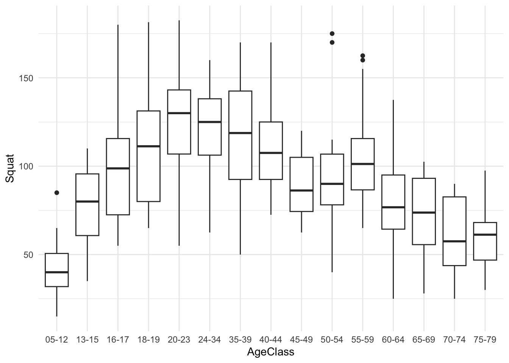
Run the test, confirm significant p-value:
female_squat_results <- kruskal.test(female_squat_ranked$rank ~
female_squat_ranked$AgeClass)
female_squat_results
Kruskal-Wallis rank sum test
data: female_squat_ranked$rank by female_squat_ranked$AgeClass
Kruskal-Wallis chi-squared = 143.25, df = 14, p-value < 2.2e-16Run pairwise test:
female_squat_dunn <- dunn.test(female_squat_ranked$rank, female_squat_ranked$AgeClass, method = "bh")
dunn_results_df <- as.data.frame(female_squat_dunn$P.adjusted, female_squat_dunn$comparisons) |>
tibble::rownames_to_column("comparison") |>
separate(comparison, into = c("group1", "group2"), sep = " - ") |>
rename("p_value" = `female_squat_dunn$P.adjusted`)Create a visualization to show log p-values:
female_squat_dunn <- dunn.test(female_squat_ranked$rank, female_squat_ranked$AgeClass, method = "bh") Kruskal-Wallis rank sum test
data: x and group
Kruskal-Wallis chi-squared = 143.2451, df = 14, p-value = 0
Dunn's Pairwise Comparison of x by group
(Benjamini-Hochberg)
Col Mean-│
Row Mean │ 05-12 13-15 16-17 18-19 20-23 24-34
─────────┼──────────────────────────────────────────────────────────────────
13-15 │ 3.215254
│ 0.0019*
│
16-17 │ 4.915839 1.700585
│ 0.0000* 0.0708
│
18-19 │ 5.936555 2.721300 1.020715
│ 0.0000* 0.0073* 0.1899
│
20-23 │ 7.110378 3.895123 2.194538 1.173823
│ 0.0000* 0.0002* 0.0274 0.1559
│
24-34 │ 6.898944 3.683689 1.983104 0.962389 -0.211433
│ 0.0000* 0.0004* 0.0429 0.2027 0.4203
│
35-39 │ 6.680219 3.464965 1.764379 0.743664 -0.430158 -0.218724
│ 0.0000* 0.0008* 0.0637 0.2666 0.3648 0.4215
│
40-44 │ 6.213606 2.998352 1.297767 0.277051 -0.896771 -0.685337
│ 0.0000* 0.0035* 0.1325 0.4146 0.2206 0.2845
│
45-49 │ 4.254197 1.038942 -0.661642 -1.682358 -2.856181 -2.644747
│ 0.0001* 0.1890 0.2900 0.0725 0.0050* 0.0089*
│
50-54 │ 4.664306 1.449051 -0.251533 -1.272249 -2.446072 -2.234638
│ 0.0000* 0.1074 0.4166 0.1368 0.0149* 0.0252
│
55-59 │ 5.692312 2.477058 0.776472 -0.244242 -1.418065 -1.206631
│ 0.0000* 0.0139* 0.2581 0.4154 0.1108 0.1512
│
60-64 │ 3.076728 -0.138525 -1.839110 -2.859826 -4.033649 -3.822215
│ 0.0027* 0.4449 0.0549 0.0051* 0.0001* 0.0003*
│
65-69 │ 2.723123 -0.492130 -2.192715 -3.213431 -4.387254 -4.175820
│ 0.0074* 0.3477 0.0270 0.0019* 0.0000* 0.0001*
│
70-74 │ 1.359739 -1.855515 -3.556100 -4.576816 -5.750639 -5.539205
│ 0.1201 0.0538 0.0006* 0.0000* 0.0000* 0.0000*
│
75-79 │ 1.099092 -2.116162 -3.816747 -4.837463 -6.011286 -5.799852
│ 0.1740 0.0322 0.0003* 0.0000* 0.0000* 0.0000*
Col Mean-│
Row Mean │ 35-39 40-44 45-49 50-54 55-59 60-64
─────────┼──────────────────────────────────────────────────────────────────
40-44 │ -0.466612
│ 0.3541
│
45-49 │ -2.426022 -1.959409
│ 0.0154* 0.0438
│
50-54 │ -2.015913 -1.549300 0.410108
│ 0.0404 0.0910 0.3690
│
55-59 │ -0.987906 -0.521294 1.438115 1.028006
│ 0.1973 0.3399 0.1082 0.1900
│
60-64 │ -3.603490 -3.136877 -1.177468 -1.587577 -2.615583
│ 0.0005* 0.0023* 0.1568 0.0855 0.0095*
│
65-69 │ -3.957095 -3.490483 -1.531073 -1.941182 -2.969188 -0.353605
│ 0.0002* 0.0008* 0.0930 0.0450 0.0037* 0.3877
│
70-74 │ -5.320480 -4.853867 -2.894457 -3.304566 -4.332573 -1.716989
│ 0.0000* 0.0000* 0.0046* 0.0014* 0.0000* 0.0694
│
75-79 │ -5.581127 -5.114514 -3.155105 -3.565213 -4.593220 -1.977636
│ 0.0000* 0.0000* 0.0022* 0.0006* 0.0000* 0.0427
Col Mean-│
Row Mean │ 65-69 70-74
─────────┼──────────────────────
70-74 │ -1.363384
│ 0.1209
│
75-79 │ -1.624031 -0.260647
│ 0.0806 0.4170
FDR = 0.05
Reject Ho if p ≤ FDR/2 with stopping rule, where p = Pr(Z ≥ |z|)dunn_results_df <- as.data.frame(female_squat_dunn$P.adjusted, female_squat_dunn$comparisons) |>
tibble::rownames_to_column("comparison") |>
separate(comparison, into = c("group1", "group2"), sep = " - ") |>
rename("p_value" = `female_squat_dunn$P.adjusted`)
dunn_results_df$log_p <- -log10(dunn_results_df$p_value)
ggplot(dunn_results_df, aes(x = group1, y = group2, fill = p_value)) +
geom_tile(color = "black", linewidth = 0.5) +
scale_fill_gradient(low = "forestgreen", high = "grey100") +
theme_minimal()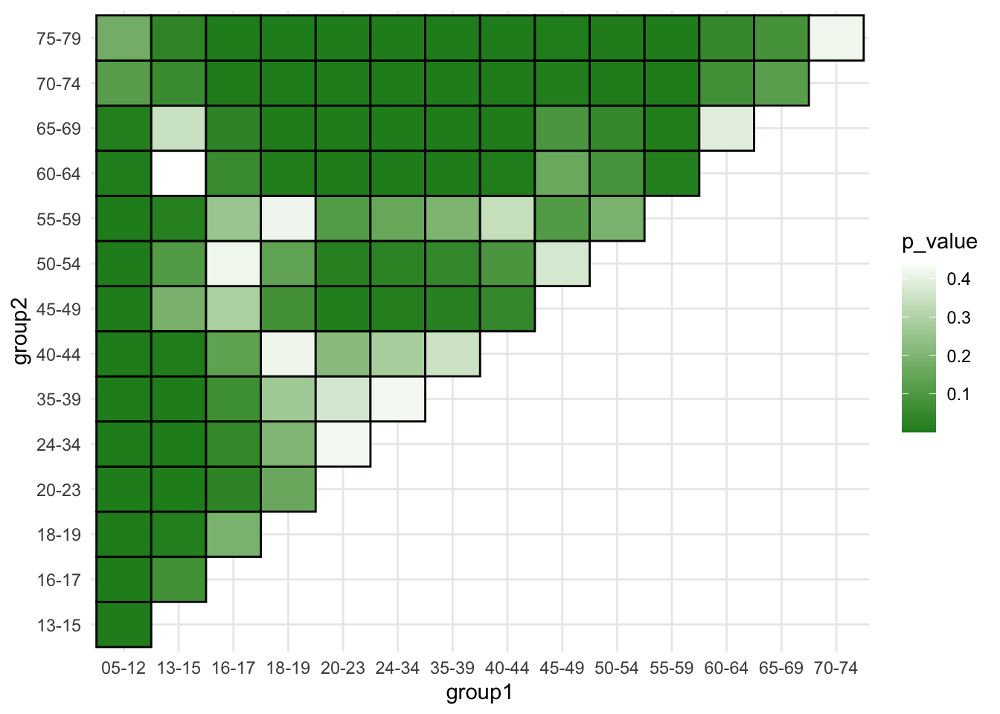
Create heatmap of significant p-values:
dunn_results_df$sig <- if_else(dunn_results_df$p_value <= 0.05,1,0)
ggplot(dunn_results_df, aes(x = group1, y = group2, fill = sig)) +
geom_tile(color = "black", linewidth = 0.5) +
scale_fill_continuous(low = "grey100", high = "forestgreen") +
theme_minimal()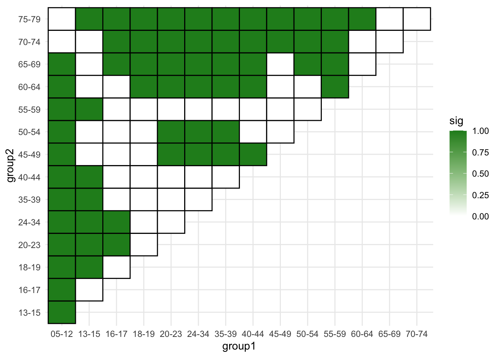
Female Deadlift
Arrange data appropriately:
female_deadlift_ranked <- openpl_female |> arrange(desc(Deadlift)) |>
mutate(rank = row_number()) |>
filter(!is.na(AgeClass)) |>
mutate(AgeClass = fct_relevel(AgeClass, "5-12")) |>
select(Name, Age, AgeClass, Deadlift, rank)|>
mutate(AgeClass = fct_recode(AgeClass,
"05-12" = "5-12"))
## recoding "5-12" as "05-12" so it appears in the correct order
female_deadlift_ranked |>
group_by(AgeClass) |>
summarise(n())Look at distribution of the data:
ggplot(data = female_deadlift_ranked, aes(x = AgeClass, y = Deadlift)) +
geom_boxplot() +
theme_minimal()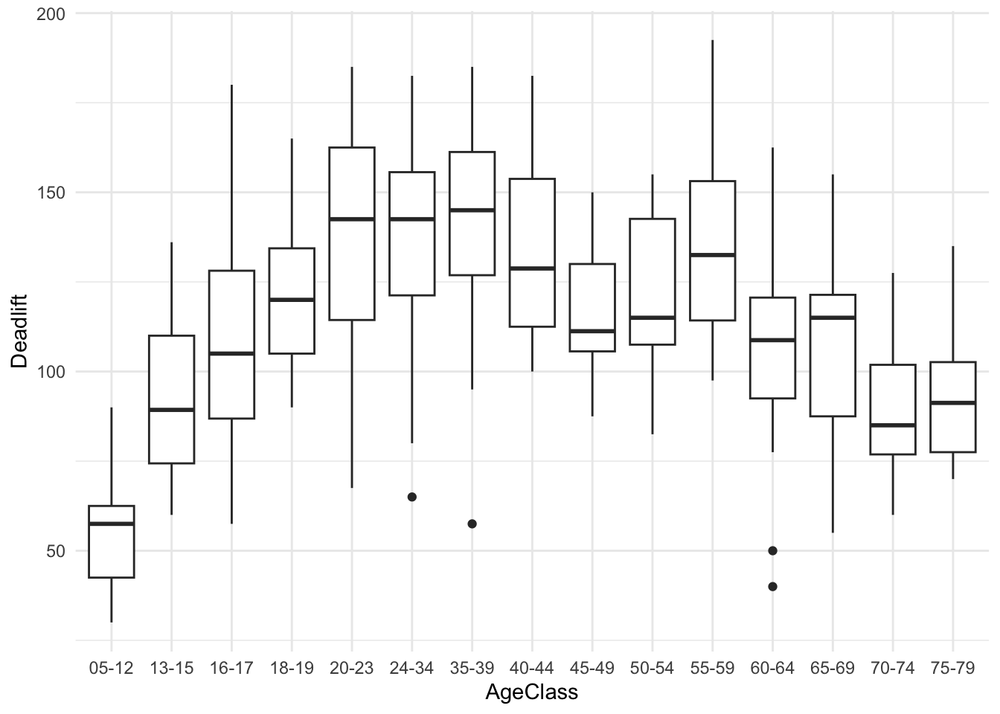
Run the test, confirm significant p-value:
female_deadlift_results <- kruskal.test(female_deadlift_ranked$rank ~
female_deadlift_ranked$AgeClass)
female_deadlift_results
Kruskal-Wallis rank sum test
data: female_deadlift_ranked$rank by female_deadlift_ranked$AgeClass
Kruskal-Wallis chi-squared = 130.91, df = 14, p-value < 2.2e-16Run pairwise test:
female_deadlift_dunn <- dunn.test(female_deadlift_ranked$rank, female_deadlift_ranked$AgeClass, method = "bh")
dunn_results_df <- as.data.frame(female_deadlift_dunn$P.adjusted, female_deadlift_dunn$comparisons) |>
tibble::rownames_to_column("comparison") |>
separate(comparison, into = c("group1", "group2"), sep = " - ") |>
rename("p_value" = `female_deadlift_dunn$P.adjusted`)Create a visualization to show log p-values:
female_deadlift_dunn <- dunn.test(female_deadlift_ranked$rank, female_deadlift_ranked$AgeClass, method = "bh") Kruskal-Wallis rank sum test
data: x and group
Kruskal-Wallis chi-squared = 130.9091, df = 14, p-value = 0
Dunn's Pairwise Comparison of x by group
(Benjamini-Hochberg)
Col Mean-│
Row Mean │ 05-12 13-15 16-17 18-19 20-23 24-34
─────────┼──────────────────────────────────────────────────────────────────
13-15 │ 2.932734
│ 0.0052*
│
16-17 │ 4.482035 1.549300
│ 0.0000* 0.0937
│
18-19 │ 5.750639 2.817904 1.268603
│ 0.0000* 0.0069* 0.1432
│
20-23 │ 6.862490 3.929755 2.380454 1.111850
│ 0.0000* 0.0002* 0.0178* 0.1684
│
24-34 │ 7.217917 4.285183 2.735882 1.467278 0.355427
│ 0.0000* 0.0000* 0.0082* 0.1052 0.4077
│
35-39 │ 7.360089 4.427354 2.878053 1.609449 0.497598 0.142171
│ 0.0000* 0.0000* 0.0058* 0.0855 0.3609 0.4610
│
40-44 │ 6.866135 3.933400 2.384100 1.115496 0.003645 -0.351782
│ 0.0000* 0.0002* 0.0180* 0.1694 0.4985 0.4007
│
45-49 │ 5.039783 2.107048 0.557748 -0.710855 -1.822706 -2.178134
│ 0.0000* 0.0329 0.3404 0.2947 0.0579 0.0286
│
50-54 │ 5.672262 2.739527 1.190227 -0.078376 -1.190227 -1.545655
│ 0.0000* 0.0083* 0.1555 0.4826 0.1535 0.0930
│
55-59 │ 6.939043 4.006308 2.457008 1.188404 0.076553 -0.278874
│ 0.0000* 0.0001* 0.0150* 0.1521 0.4786 0.4223
│
60-64 │ 4.339864 1.407129 -0.142171 -1.410774 -2.522625 -2.878053
│ 0.0000* 0.1146 0.4656 0.1154 0.0130* 0.0060*
│
65-69 │ 4.192225 1.259490 -0.289810 -1.558414 -2.670265 -3.025692
│ 0.0001* 0.1417 0.4222 0.0934 0.0093* 0.0041*
│
70-74 │ 2.325773 -0.606961 -2.156261 -3.424865 -4.536716 -4.892144
│ 0.0202* 0.3245 0.0297 0.0012* 0.0000* 0.0000*
│
75-79 │ 2.580952 -0.351782 -1.901082 -3.169686 -4.281537 -4.636965
│ 0.0115* 0.4049 0.0519 0.0028* 0.0000* 0.0000*
Col Mean-│
Row Mean │ 35-39 40-44 45-49 50-54 55-59 60-64
─────────┼──────────────────────────────────────────────────────────────────
40-44 │ -0.493953
│ 0.3585
│
45-49 │ -2.320305 -1.826351
│ 0.0201* 0.0584
│
50-54 │ -1.687826 -1.193872 0.632479
│ 0.0750 0.1565 0.3181
│
55-59 │ -0.421045 0.072908 1.899260 1.266781
│ 0.3845 0.4755 0.0512 0.1418
│
60-64 │ -3.020224 -2.526271 -0.699919 -1.332398 -2.599179
│ 0.0040* 0.0132* 0.2955 0.1296 0.0111*
│
65-69 │ -3.167863 -2.673910 -0.847558 -1.480037 -2.746818 -0.147639
│ 0.0027* 0.0094* 0.2479 0.1041 0.0083* 0.4681
│
70-74 │ -5.034315 -4.540361 -2.714010 -3.346489 -4.613270 -2.014090
│ 0.0000* 0.0000* 0.0085* 0.0015* 0.0000* 0.0405
│
75-79 │ -4.779136 -4.285183 -2.458831 -3.091310 -4.358091 -1.758911
│ 0.0000* 0.0000* 0.0152* 0.0034* 0.0000* 0.0655
Col Mean-│
Row Mean │ 65-69 70-74
─────────┼──────────────────────
70-74 │ -1.866451
│ 0.0542
│
75-79 │ -1.611272 0.255178
│ 0.0865 0.4278
FDR = 0.05
Reject Ho if p ≤ FDR/2 with stopping rule, where p = Pr(Z ≥ |z|)dunn_results_df <- as.data.frame(female_deadlift_dunn$P.adjusted, female_deadlift_dunn$comparisons) |>
tibble::rownames_to_column("comparison") |>
separate(comparison, into = c("group1", "group2"), sep = " - ") |>
rename("p_value" = `female_deadlift_dunn$P.adjusted`)
dunn_results_df$log_p <- -log10(dunn_results_df$p_value)
ggplot(dunn_results_df, aes(x = group1, y = group2, fill = p_value)) +
geom_tile(color = "black", linewidth = 0.5) +
scale_fill_gradient(low = "forestgreen", high = "grey100") +
theme_minimal()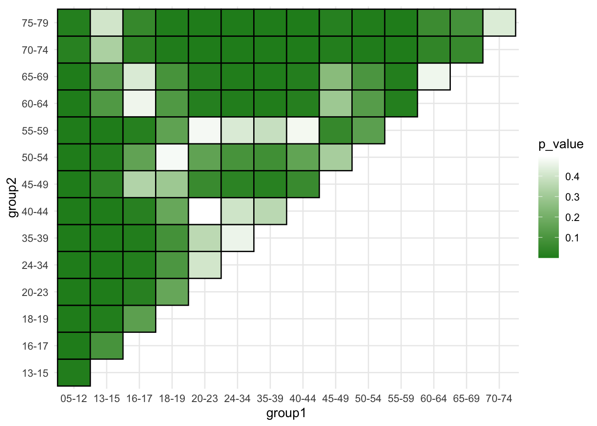
Create heatmap of significant p-values:
dunn_results_df$sig <- if_else(dunn_results_df$p_value <= 0.05,1,0)
ggplot(dunn_results_df, aes(x = group1, y = group2, fill = sig)) +
geom_tile(color = "black", linewidth = 0.5) +
scale_fill_continuous(low = "grey100", high = "forestgreen") +
theme_minimal()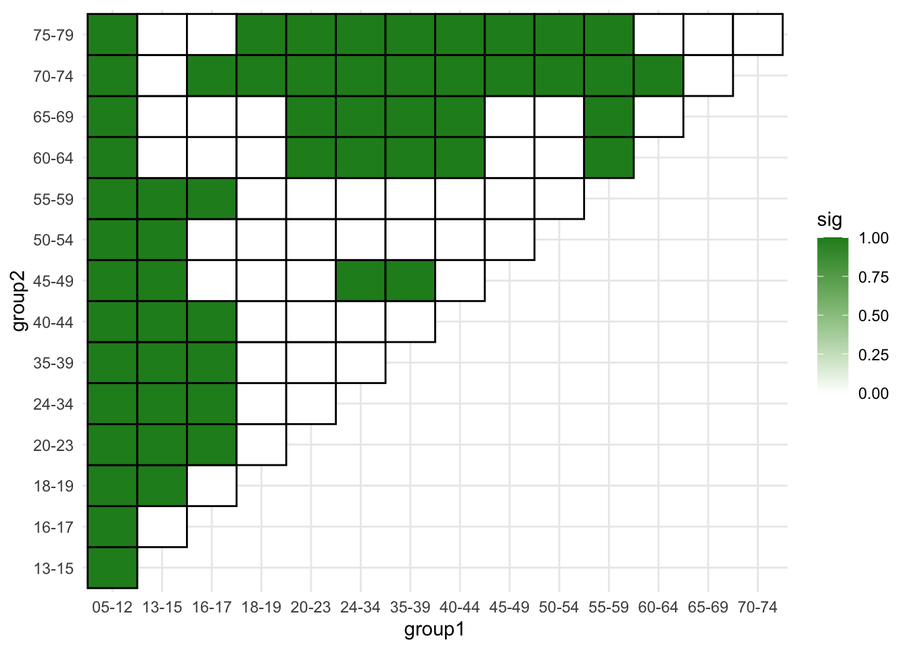
Male Squat
Arrange data appropriately:
male_squat_ranked <- openpl_male |> arrange(desc(Squat)) |>
mutate(rank = row_number()) |>
filter(!is.na(AgeClass)) |>
mutate(AgeClass = fct_relevel(AgeClass, "5-12")) |>
select(Name, Age, AgeClass, Squat, rank)|>
mutate(AgeClass = fct_recode(AgeClass,
"05-12" = "5-12"))
## recoding "5-12" as "05-12" so it appears in the correct order
male_squat_ranked |>
group_by(AgeClass) |>
summarise(n())Look at distribution of the data:
ggplot(data = male_squat_ranked, aes(x = AgeClass, y = Squat)) +
geom_boxplot() +
theme_minimal()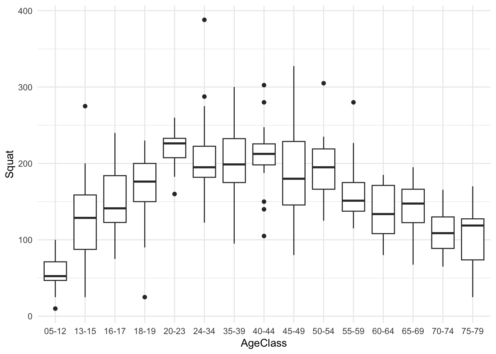
Run the test, confirm significant p-value:
male_squat_results <- kruskal.test(male_squat_ranked$rank ~
male_squat_ranked$AgeClass)
male_squat_results
Kruskal-Wallis rank sum test
data: male_squat_ranked$rank by male_squat_ranked$AgeClass
Kruskal-Wallis chi-squared = 164.44, df = 14, p-value < 2.2e-16Run pairwise test:
male_squat_dunn <- dunn.test(male_squat_ranked$rank, male_squat_ranked$AgeClass, method = "bh")
dunn_results_df <- as.data.frame(male_squat_dunn$P.adjusted, male_squat_dunn$comparisons) |>
tibble::rownames_to_column("comparison") |>
separate(comparison, into = c("group1", "group2"), sep = " - ") |>
rename("p_value" = `male_squat_dunn$P.adjusted`)Create a visualization to show log p-values:
male_squat_dunn <- dunn.test(male_squat_ranked$rank, male_squat_ranked$AgeClass, method = "bh") Kruskal-Wallis rank sum test
data: x and group
Kruskal-Wallis chi-squared = 164.4439, df = 14, p-value = 0
Dunn's Pairwise Comparison of x by group
(Benjamini-Hochberg)
Col Mean-│
Row Mean │ 05-12 13-15 16-17 18-19 20-23 24-34
─────────┼──────────────────────────────────────────────────────────────────
13-15 │ 3.151459
│ 0.0020*
│
16-17 │ 4.226856 1.075396
│ 0.0001* 0.1703
│
18-19 │ 5.541027 2.389568 1.314171
│ 0.0000* 0.0158* 0.1287
│
20-23 │ 8.395386 5.243926 4.168529 2.854358
│ 0.0000* 0.0000* 0.0001* 0.0048*
│
24-34 │ 7.123137 3.971677 2.896280 1.582109 -1.272249
│ 0.0000* 0.0001* 0.0044* 0.0829 0.1351
│
35-39 │ 7.083037 3.931578 2.856181 1.542009 -1.312348 -0.040099
│ 0.0000* 0.0002* 0.0049* 0.0873 0.1275 0.4887
│
40-44 │ 7.524132 4.372672 3.297276 1.983104 -0.871253 0.400995
│ 0.0000* 0.0000* 0.0012* 0.0395 0.2238 0.3688
│
45-49 │ 5.878228 2.726768 1.651372 0.337200 -2.517157 -1.244908
│ 0.0000* 0.0066* 0.0751 0.3903 0.0117* 0.1365
│
50-54 │ 6.802340 3.650881 2.575484 1.261312 -1.593045 -0.320796
│ 0.0000* 0.0004* 0.0101* 0.1343 0.0822 0.3929
│
55-59 │ 4.715341 1.563882 0.488485 -0.825686 -3.680044 -2.407795
│ 0.0000* 0.0848 0.3419 0.2360 0.0004* 0.0153*
│
60-64 │ 3.444915 0.293455 -0.781941 -2.096112 -4.950470 -3.678221
│ 0.0008* 0.3998 0.2478 0.0310 0.0000* 0.0004*
│
65-69 │ 3.721966 0.570507 -0.504889 -1.819061 -4.673419 -3.401170
│ 0.0003* 0.3174 0.3391 0.0548 0.0000* 0.0009*
│
70-74 │ 1.924778 -1.226681 -2.302078 -3.616249 -6.470608 -5.198359
│ 0.0438 0.1391 0.0193* 0.0004* 0.0000* 0.0000*
│
75-79 │ 1.935714 -1.215745 -2.291142 -3.605313 -6.459671 -5.187422
│ 0.0434 0.1401 0.0195* 0.0004* 0.0000* 0.0000*
Col Mean-│
Row Mean │ 35-39 40-44 45-49 50-54 55-59 60-64
─────────┼──────────────────────────────────────────────────────────────────
40-44 │ 0.441094
│ 0.3568
│
45-49 │ -1.204809 -1.645904
│ 0.1410 0.0748
│
50-54 │ -0.280696 -0.721791 0.924112
│ 0.4009 0.2656 0.2097
│
55-59 │ -2.367695 -2.808790 -1.162886 -2.086998
│ 0.0165* 0.0054* 0.1495 0.0312
│
60-64 │ -3.638122 -4.079217 -2.433313 -3.357425 -1.270426
│ 0.0004* 0.0001* 0.0145* 0.0010* 0.1338
│
65-69 │ -3.361070 -3.802165 -2.156261 -3.080374 -0.993375 0.277051
│ 0.0010* 0.0003* 0.0272 0.0025* 0.1912 0.3985
│
70-74 │ -5.158259 -5.599354 -3.953450 -4.877562 -2.790563 -1.520137
│ 0.0000* 0.0000* 0.0001* 0.0000* 0.0056* 0.0899
│
75-79 │ -5.147323 -5.588418 -3.942514 -4.866626 -2.779627 -1.509201
│ 0.0000* 0.0000* 0.0002* 0.0000* 0.0057* 0.0907
Col Mean-│
Row Mean │ 65-69 70-74
─────────┼──────────────────────
70-74 │ -1.797188
│ 0.0567
│
75-79 │ -1.786252 0.010936
│ 0.0572 0.4956
FDR = 0.05
Reject Ho if p ≤ FDR/2 with stopping rule, where p = Pr(Z ≥ |z|)dunn_results_df <- as.data.frame(male_squat_dunn$P.adjusted, male_squat_dunn$comparisons) |>
tibble::rownames_to_column("comparison") |>
separate(comparison, into = c("group1", "group2"), sep = " - ") |>
rename("p_value" = `male_squat_dunn$P.adjusted`)
dunn_results_df$log_p <- -log10(dunn_results_df$p_value)
ggplot(dunn_results_df, aes(x = group1, y = group2, fill = p_value)) +
geom_tile(color = "black", linewidth = 0.5) +
scale_fill_gradient(low = "forestgreen", high = "grey100") +
theme_minimal()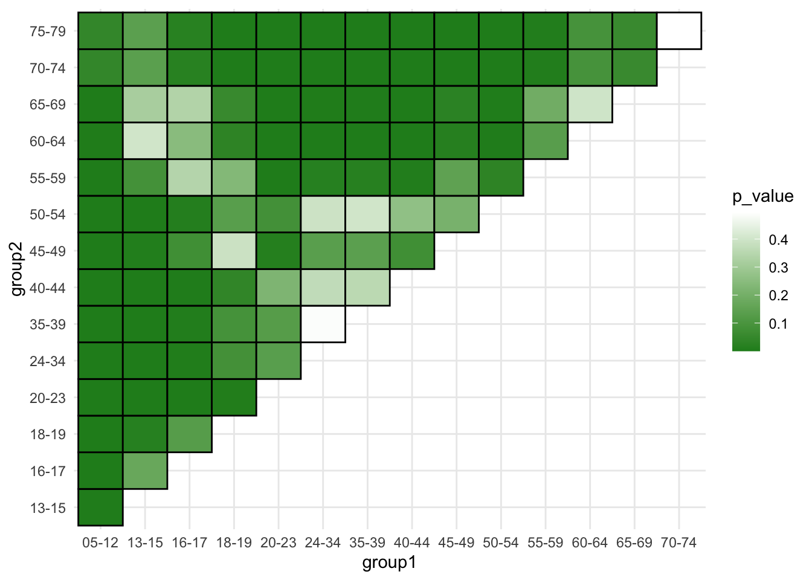
Create heatmap of significant p-values:
dunn_results_df$sig <- if_else(dunn_results_df$p_value <= 0.05,1,0)
ggplot(dunn_results_df, aes(x = group1, y = group2, fill = sig)) +
geom_tile(color = "black", linewidth = 0.5) +
scale_fill_continuous(low = "grey100", high = "forestgreen") +
theme_minimal()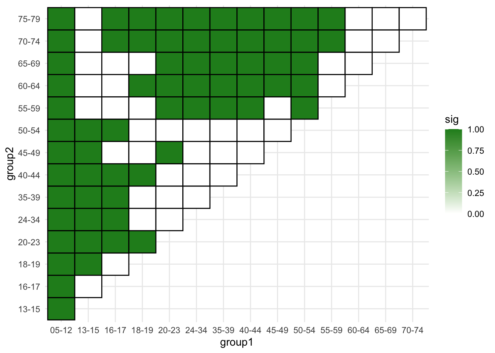
Male Deadlift
Arrange data appropriately:
male_deadlift_ranked <- openpl_male |> arrange(desc(Deadlift)) |>
mutate(rank = row_number()) |>
filter(!is.na(AgeClass)) |>
mutate(AgeClass = fct_relevel(AgeClass, "5-12")) |>
select(Name, Age, AgeClass, Deadlift, rank)|>
mutate(AgeClass = fct_recode(AgeClass,
"05-12" = "5-12"))
## recoding "5-12" as "05-12" so it appears in the correct order
male_deadlift_ranked |>
group_by(AgeClass) |>
summarise(n())Look at distribution of the data:
ggplot(data = male_deadlift_ranked, aes(x = AgeClass, y = Deadlift)) +
geom_boxplot() +
theme_minimal()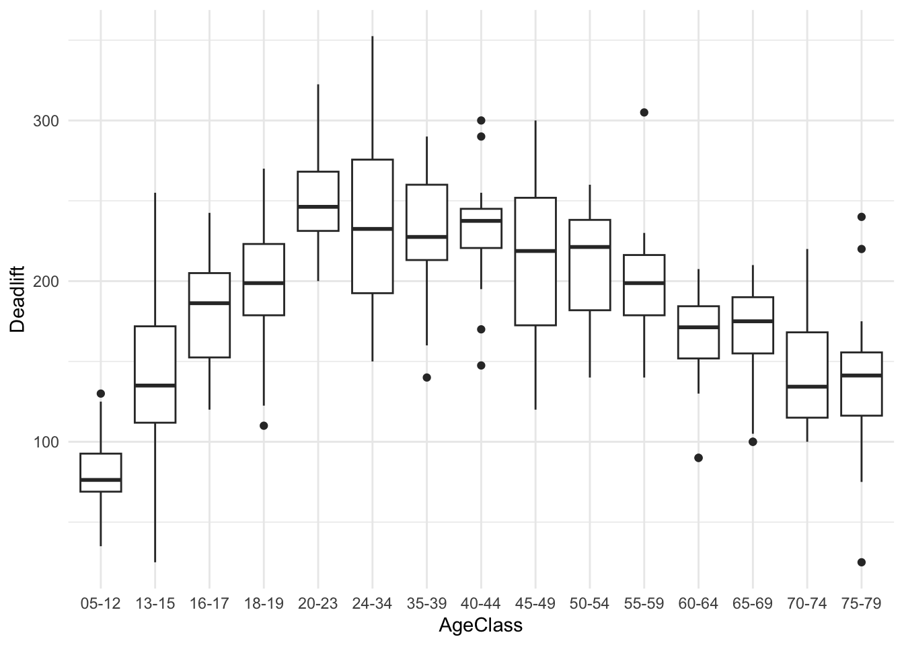
Run the test, confirm significant p-value:
male_deadlift_results <- kruskal.test(male_deadlift_ranked$rank ~
male_deadlift_ranked$AgeClass)
male_deadlift_results
Kruskal-Wallis rank sum test
data: male_deadlift_ranked$rank by male_deadlift_ranked$AgeClass
Kruskal-Wallis chi-squared = 166.62, df = 14, p-value < 2.2e-16Run pairwise test:
male_deadlift_dunn <- dunn.test(male_deadlift_ranked$rank, male_deadlift_ranked$AgeClass, method = "bh")
dunn_results_df <- as.data.frame(male_deadlift_dunn$P.adjusted, male_deadlift_dunn$comparisons) |>
tibble::rownames_to_column("comparison") |>
separate(comparison, into = c("group1", "group2"), sep = " - ") |>
rename("p_value" = `male_deadlift_dunn$P.adjusted`)Create a visualization to show log p-values:
male_deadlift_dunn <- dunn.test(male_deadlift_ranked$rank, male_deadlift_ranked$AgeClass, method = "bh") Kruskal-Wallis rank sum test
data: x and group
Kruskal-Wallis chi-squared = 166.6208, df = 14, p-value = 0
Dunn's Pairwise Comparison of x by group
(Benjamini-Hochberg)
Col Mean-│
Row Mean │ 05-12 13-15 16-17 18-19 20-23 24-34
─────────┼──────────────────────────────────────────────────────────────────
13-15 │ 2.518980
│ 0.0114*
│
16-17 │ 4.544007 2.025026
│ 0.0000* 0.0357
│
18-19 │ 5.415261 2.896280 0.871253
│ 0.0000* 0.0043* 0.2189
│
20-23 │ 8.475585 5.956604 3.931578 3.060324
│ 0.0000* 0.0000* 0.0001* 0.0026*
│
24-34 │ 7.309053 4.790072 2.765045 1.893792 -1.166532
│ 0.0000* 0.0000* 0.0061* 0.0456 0.1578
│
35-39 │ 7.227031 4.708050 2.683024 1.811770 -1.248553 -0.082021
│ 0.0000* 0.0000* 0.0075* 0.0525 0.1408 0.4811
│
40-44 │ 7.536891 5.017911 2.992884 2.121630 -0.938693 0.227838
│ 0.0000* 0.0000* 0.0032* 0.0287 0.2052 0.4304
│
45-49 │ 6.244592 3.725612 1.700585 0.829331 -2.230992 -1.064460
│ 0.0000* 0.0003* 0.0649 0.2273 0.0232* 0.1795
│
50-54 │ 6.180797 3.661817 1.636790 0.765536 -2.294787 -1.128255
│ 0.0000* 0.0004* 0.0731 0.2428 0.0200* 0.1660
│
55-59 │ 5.344175 2.825195 0.800168 -0.071085 -3.131409 -1.964877
│ 0.0000* 0.0053* 0.2341 0.4808 0.0021* 0.0399
│
60-64 │ 3.423042 0.904062 -1.120964 -1.992218 -5.052542 -3.886010
│ 0.0009* 0.2135 0.1659 0.0380 0.0000* 0.0002*
│
65-69 │ 3.577972 1.058992 -0.966034 -1.837288 -4.897612 -3.731080
│ 0.0005* 0.1789 0.1993 0.0503 0.0000* 0.0003*
│
70-74 │ 2.205474 -0.313505 -2.338532 -3.209786 -6.270110 -5.103578
│ 0.0244* 0.4039 0.0181* 0.0017* 0.0000* 0.0000*
│
75-79 │ 2.148971 -0.370009 -2.395036 -3.266290 -6.326614 -5.160082
│ 0.0272 0.3850 0.0159* 0.0015* 0.0000* 0.0000*
Col Mean-│
Row Mean │ 35-39 40-44 45-49 50-54 55-59 60-64
─────────┼──────────────────────────────────────────────────────────────────
40-44 │ 0.309860
│ 0.4013
│
45-49 │ -0.982438 -1.292298
│ 0.1967 0.1338
│
50-54 │ -1.046233 -1.356093 -0.063794
│ 0.1804 0.1209 0.4791
│
55-59 │ -1.882855 -2.192715 -0.900417 -0.836622
│ 0.0461 0.0248* 0.2122 0.2274
│
60-64 │ -3.803988 -4.113848 -2.821549 -2.757754 -1.921132
│ 0.0002* 0.0001* 0.0052* 0.0061* 0.0435
│
65-69 │ -3.649058 -3.958918 -2.666619 -2.602824 -1.766202 0.154930
│ 0.0004* 0.0001* 0.0077* 0.0092* 0.0572 0.4558
│
70-74 │ -5.021556 -5.331416 -4.039117 -3.975322 -3.138700 -1.217567
│ 0.0000* 0.0000* 0.0001* 0.0001* 0.0021* 0.1466
│
75-79 │ -5.078060 -5.387920 -4.095621 -4.031826 -3.195204 -1.274071
│ 0.0000* 0.0000* 0.0001* 0.0001* 0.0018* 0.1364
Col Mean-│
Row Mean │ 65-69 70-74
─────────┼──────────────────────
70-74 │ -1.372498
│ 0.1189
│
75-79 │ -1.429001 -0.056503
│ 0.1085 0.4775
FDR = 0.05
Reject Ho if p ≤ FDR/2 with stopping rule, where p = Pr(Z ≥ |z|)dunn_results_df <- as.data.frame(male_deadlift_dunn$P.adjusted, male_deadlift_dunn$comparisons) |>
tibble::rownames_to_column("comparison") |>
separate(comparison, into = c("group1", "group2"), sep = " - ") |>
rename("p_value" = `male_deadlift_dunn$P.adjusted`)
dunn_results_df$log_p <- -log10(dunn_results_df$p_value)
ggplot(dunn_results_df, aes(x = group1, y = group2, fill = p_value)) +
geom_tile(color = "black", linewidth = 0.5) +
scale_fill_gradient(low = "forestgreen", high = "grey100") +
theme_minimal()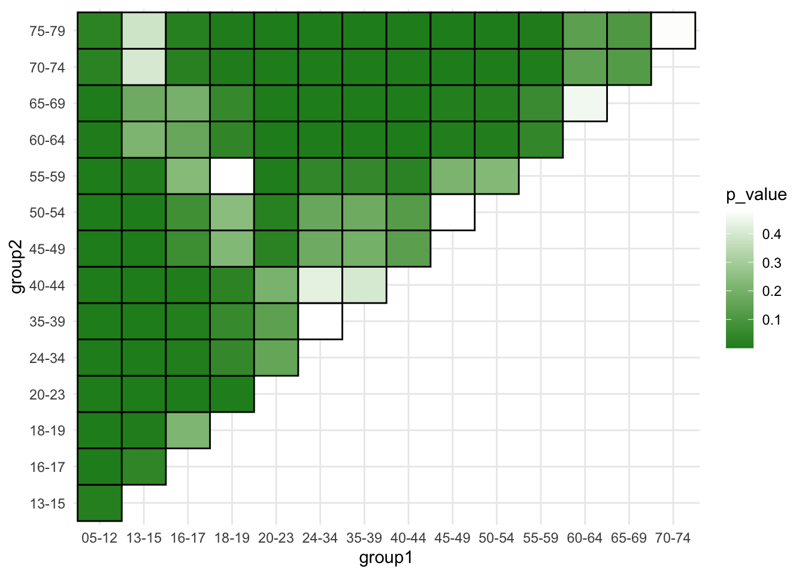
Create heatmap of significant p-values:
dunn_results_df$sig <- if_else(dunn_results_df$p_value <= 0.05,1,0)
ggplot(dunn_results_df, aes(x = group1, y = group2, fill = sig)) +
geom_tile(color = "black", linewidth = 0.5) +
scale_fill_continuous(low = "grey100", high = "forestgreen") +
theme_minimal()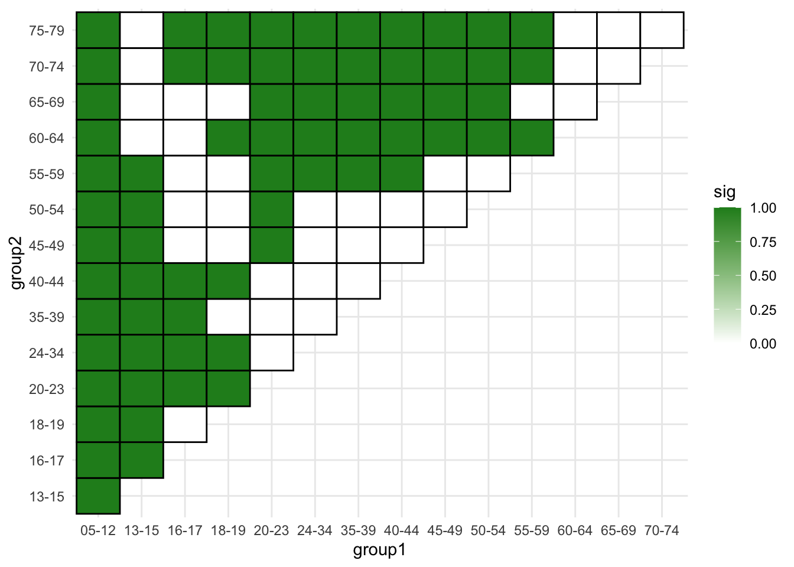
Male Bench
Arrange data appropriately:
male_bench_ranked <- openpl_male |> arrange(desc(Bench)) |>
mutate(rank = row_number()) |>
filter(!is.na(AgeClass)) |>
mutate(AgeClass = fct_relevel(AgeClass, "5-12")) |>
select(Name, Age, AgeClass, Bench, rank)|>
mutate(AgeClass = fct_recode(AgeClass,
"05-12" = "5-12"))
## recoding "5-12" as "05-12" so it appears in the correct order
male_bench_ranked |>
group_by(AgeClass) |>
summarise(n())Look at distribution of the data:
ggplot(data = male_bench_ranked, aes(x = AgeClass, y = Bench)) +
geom_boxplot() +
theme_minimal()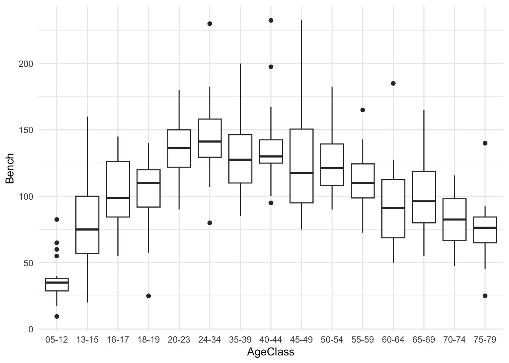
Run the test, confirm significant p-value:
male_bench_results <- kruskal.test(male_bench_ranked$rank ~
male_bench_ranked$AgeClass)
male_bench_results
Kruskal-Wallis rank sum test
data: male_bench_ranked$rank by male_bench_ranked$AgeClass
Kruskal-Wallis chi-squared = 157.78, df = 14, p-value < 2.2e-16Run pairwise test:
male_bench_dunn <- dunn.test(male_bench_ranked$rank, male_bench_ranked$AgeClass, method = "bh")
dunn_results_df <- as.data.frame(male_bench_dunn$P.adjusted, male_bench_dunn$comparisons) |>
tibble::rownames_to_column("comparison") |>
separate(comparison, into = c("group1", "group2"), sep = " - ") |>
rename("p_value" = `male_bench_dunn$P.adjusted`)Create a visualization to show log p-values:
male_bench_dunn <- dunn.test(male_bench_ranked$rank, male_bench_ranked$AgeClass, method = "bh") Kruskal-Wallis rank sum test
data: x and group
Kruskal-Wallis chi-squared = 157.7835, df = 14, p-value = 0
Dunn's Pairwise Comparison of x by group
(Benjamini-Hochberg)
Col Mean-│
Row Mean │ 05-12 13-15 16-17 18-19 20-23 24-34
─────────┼──────────────────────────────────────────────────────────────────
13-15 │ 2.670265
│ 0.0081*
│
16-17 │ 4.589575 1.919309
│ 0.0000* 0.0451
│
18-19 │ 4.821058 2.150793 0.231483
│ 0.0000* 0.0276 0.4164
│
20-23 │ 7.704580 5.034315 3.115005 2.883521
│ 0.0000* 0.0000* 0.0024* 0.0046*
│
24-34 │ 7.939709 5.269444 3.350134 3.118650 0.235129
│ 0.0000* 0.0000* 0.0011* 0.0024* 0.4190
│
35-39 │ 7.002838 4.332573 2.413263 2.181779 -0.701742 -0.936871
│ 0.0000* 0.0000* 0.0148* 0.0259 0.2726 0.2129
│
40-44 │ 7.540536 4.870271 2.950961 2.719478 -0.164043 -0.399172
│ 0.0000* 0.0000* 0.0039* 0.0072* 0.4390 0.3658
│
45-49 │ 6.069612 3.399347 1.480037 1.248553 -1.634967 -1.870096
│ 0.0000* 0.0010* 0.0985 0.1373 0.0755 0.0496
│
50-54 │ 6.445090 3.774825 1.855515 1.624031 -1.259490 -1.494619
│ 0.0000* 0.0003* 0.0505 0.0761 0.1364 0.0971
│
55-59 │ 5.216586 2.546321 0.627011 0.395527 -2.487994 -2.723123
│ 0.0000* 0.0110* 0.2933 0.3635 0.0123* 0.0072*
│
60-64 │ 3.539696 0.869431 -1.049878 -1.281362 -4.164884 -4.400013
│ 0.0006* 0.2269 0.1836 0.1364 0.0001* 0.0000*
│
65-69 │ 3.942514 1.272249 -0.647060 -0.878544 -3.762066 -3.997195
│ 0.0002* 0.1351 0.2891 0.2265 0.0003* 0.0001*
│
70-74 │ 2.559079 -0.111185 -2.030495 -2.261978 -5.145500 -5.380629
│ 0.0108* 0.4557 0.0353 0.0215* 0.0000* 0.0000*
│
75-79 │ 1.837288 -0.832976 -2.752286 -2.983770 -5.867292 -6.102421
│ 0.0518 0.2336 0.0068* 0.0036* 0.0000* 0.0000*
Col Mean-│
Row Mean │ 35-39 40-44 45-49 50-54 55-59 60-64
─────────┼──────────────────────────────────────────────────────────────────
40-44 │ 0.537698
│ 0.3198
│
45-49 │ -0.933225 -1.470924
│ 0.2116 0.0989
│
50-54 │ -0.557748 -1.095446 0.375477
│ 0.3156 0.1729 0.3677
│
55-59 │ -1.786252 -2.323950 -0.853026 -1.228504
│ 0.0572 0.0185* 0.2296 0.1404
│
60-64 │ -3.463142 -4.000840 -2.529916 -2.905394 -1.676890
│ 0.0008* 0.0001* 0.0113* 0.0044* 0.0702
│
65-69 │ -3.060324 -3.598022 -2.127098 -2.502576 -1.274071 0.402818
│ 0.0028* 0.0005* 0.0288 0.0120* 0.1364 0.3681
│
70-74 │ -4.443758 -4.981456 -3.510532 -3.886010 -2.657506 -0.980616
│ 0.0000* 0.0000* 0.0007* 0.0002* 0.0083* 0.2018
│
75-79 │ -5.165550 -5.703248 -4.232324 -4.607802 -3.379297 -1.702407
│ 0.0000* 0.0000* 0.0001* 0.0000* 0.0010* 0.0675
Col Mean-│
Row Mean │ 65-69 70-74
─────────┼──────────────────────
70-74 │ -1.383434
│ 0.1150
│
75-79 │ -2.105226 -0.721791
│ 0.0299 0.2684
FDR = 0.05
Reject Ho if p ≤ FDR/2 with stopping rule, where p = Pr(Z ≥ |z|)dunn_results_df <- as.data.frame(male_bench_dunn$P.adjusted, male_bench_dunn$comparisons) |>
tibble::rownames_to_column("comparison") |>
separate(comparison, into = c("group1", "group2"), sep = " - ") |>
rename("p_value" = `male_bench_dunn$P.adjusted`)
dunn_results_df$log_p <- -log10(dunn_results_df$p_value)
ggplot(dunn_results_df, aes(x = group1, y = group2, fill = p_value)) +
geom_tile(color = "black", linewidth = 0.5) +
scale_fill_gradient(low = "forestgreen", high = "grey100") +
theme_minimal()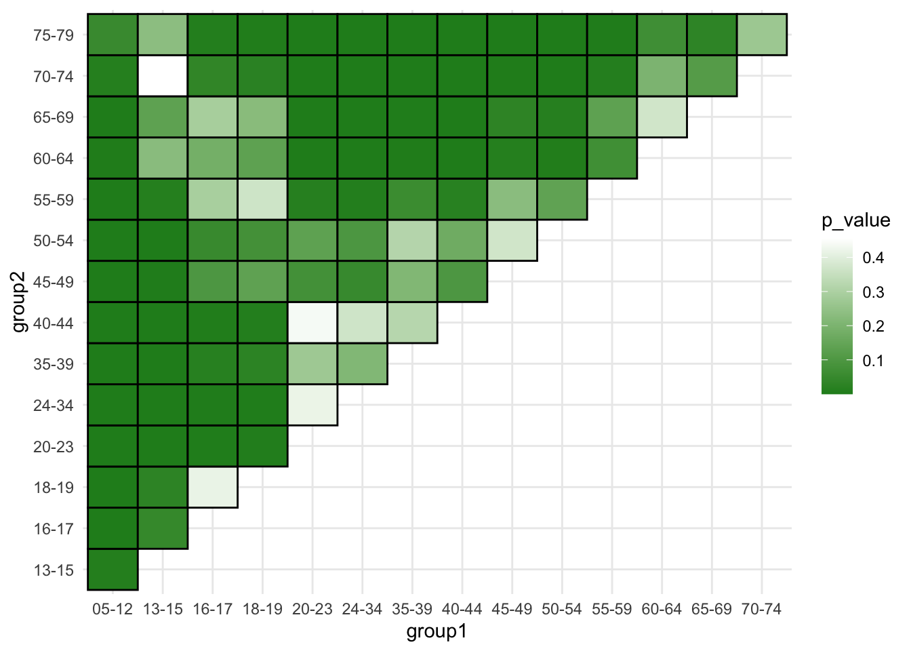
Create heatmap of significant p-values:
dunn_results_df$sig <- if_else(dunn_results_df$p_value <= 0.05,1,0)
ggplot(dunn_results_df, aes(x = group1, y = group2, fill = sig)) +
geom_tile(color = "black", linewidth = 0.5) +
scale_fill_continuous(low = "grey100", high = "forestgreen") +
theme_minimal()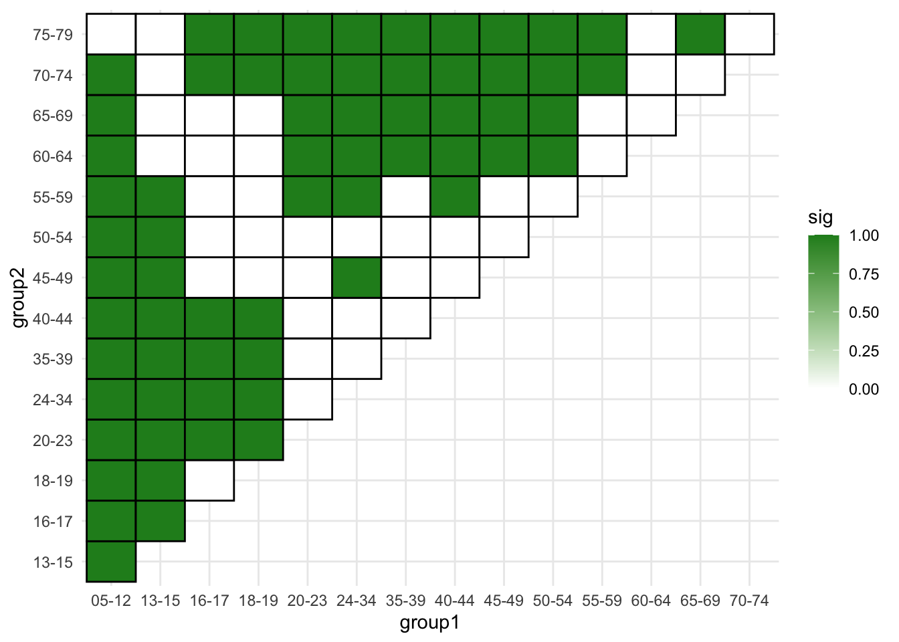